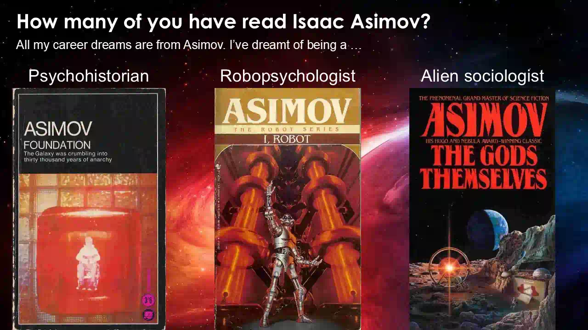
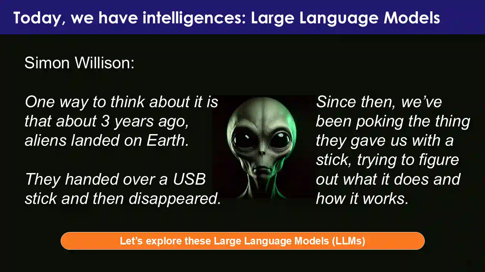
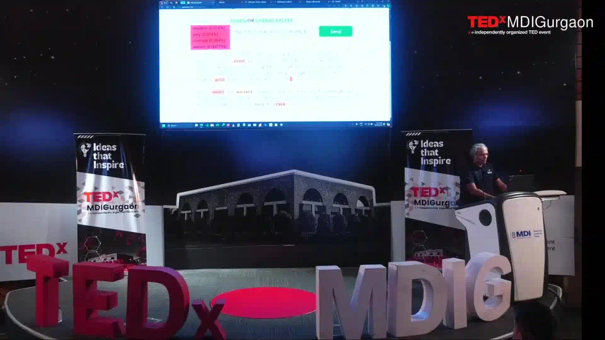
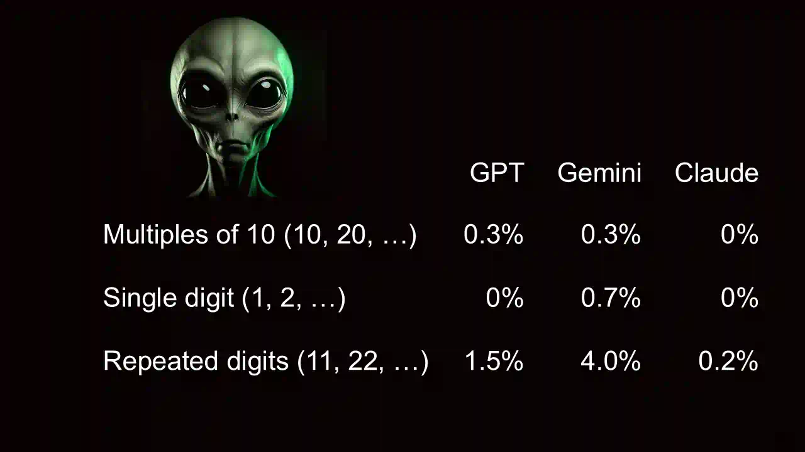
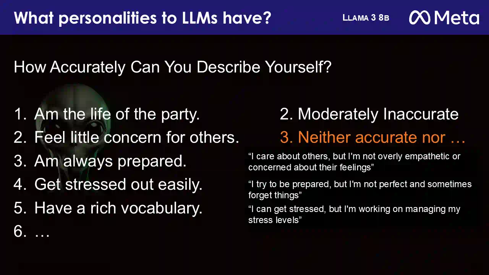
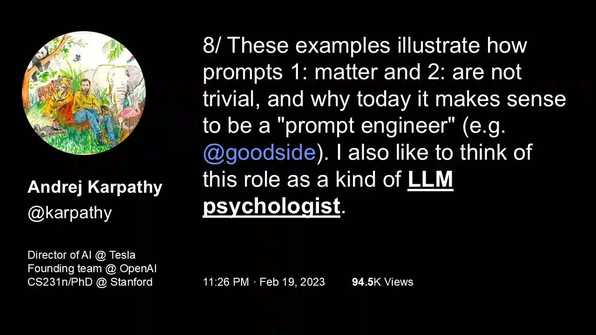
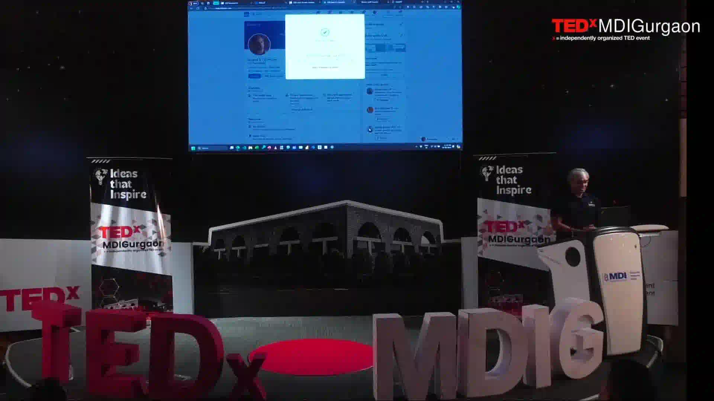

![Eight-panel comic titled ‘Becoming an LLM Psychologist: from sci-fi dreams to alien intelligence’. 1: a man reads science fiction beside a giant screen showing 42. 2: Asimov's psychohistorian and robopsychologist. 3: he unboxes a small robot from a carton labelled ‘LLM alien intelligence’ with ‘documentation’ crossed out. 4: the robot weighs next words after ‘Who won the first Olympics gold medal?’ with probability bars. 5: a temperature dial from safe guesses to wild ones. 6: a bar chart of ‘random’ numbers with peaks at 42, 47 and 72. 7: four robot characters for GPT, Claude, Gemini and Llama with personality labels. 8: the man as ‘LLM Psychologist’ under signs reading Study, Work together, Experiment and Use it before your rivals do.](comic-page.avif)
A computer that is working on its stress
Twelve minutes into his talk at the Management Development Institute in Gurgaon, Anand reached the fourth line of a personality test. The statement was “Get stressed out easily.” The test-taker was Llama 3 8B, a small language model Meta had released that April. Anand read its answer off the slide, word for word:
“Moderately accurate. I can get stressed, but I'm working on managing my stress levels.”
Llama 3 8B, answering a Big Five questionnaire in 2024 · read out at 12:08
Then he asked the obvious question.
“Now, how does a large language model, which is a computer program, get stressed? But it seems to think that it can get stressed. And who knows, maybe it does.”
Anand · 12:13
That's a strange thing to hear at a management school, and it raises two more questions. How does an engineer end up giving a computer a personality test? And why, four minutes later, did he finish the talk by changing his own job title? The talk answers both in order, and the answer starts with an older, fictional computer and the number 42.
Quotes in italic serif are Anand's words from the recording. Quotes in typewriter type are text a model wrote. Each ▶ time plays that moment in the talk's video, in the player beside the story (a mini-player on phones). “Focus video” makes the player bigger without restarting it.
Three jobs that didn't exist yet
The talk opened with a question: “How do you predict the future?” Anand's answer: read science fiction. His first exhibit was Douglas Adams's The Hitchhiker's Guide to the Galaxy. In it, a supercomputer called Deep Thought works for seventy-five thousand generations on the ultimate question of life, the universe and everything. Anand played the scene where it finally answers 00:34.
“Forty-two. In case you ever want to know, is the answer. It's a different question what the question is.”
Anand · 00:53
Remember that number. It comes back.
Then came the confession. “Every single career that I've wanted to be in emerged from Asimov” 01:01. He listed three, and none of them was a real job:
Psychohistorian
Hari Seldon in Foundation uses the psychology of whole populations to predict the next thousand years.
Robopsychologist
Susan Calvin in I, Robot “understands machines not through the engineering, but through their behavior and personalities.”
Alien sociologist
The Gods Themselves explores how a truly alien society thinks and behaves.
“And every single one of these roles is what I wanted to become, not an engineer, not a manager.”
Anand · 01:40
He became an engineer, and then a manager. “But we are where we are” 01:47. Hold on to the second vacancy. Susan Calvin didn't study robots by taking them apart. She watched what they did.


A USB stick from the aliens
Where we are, Anand said, is an exciting time, because we now have intelligences: Gemini, ChatGPT, Llama, Claude. The hard part is knowing how to think about them. For that he borrowed a picture that Simon Willison used in an August 2023 talk 02:10. Willison credits it to Alex Komoroske.
“One way to think about it is that about 3 years ago, aliens landed on Earth. They handed over a USB stick and then disappeared. Since then we've been poking the thing they gave us with a stick, trying to figure out what it does and how it works.”
Simon Willison, Catching up on the weird world of LLMs, 3 Aug 2023. Quoted on Anand's slide 5.
No manual, no documentation: “all we can do is just poke around with this, see what it is that they do, see how they work” 02:37. So Anand poked. First he opened the stick's mechanism, using llmviz, a small tool he'd built that shows the words a model considered at each step 02:46. He asked, “Who won the first Olympics gold medal?” The model answered “The first modern Olympic Games were held in Athens, Greece, in 1896. The first event…”. llmviz showed the options behind each word.
Recreated from Anand's narration at 03:50. He read out two numbers: 42% for “medal” and 11% for “event”. The screen is too small to read in the recording, so the other options are listed without values. The first word, “The”, had close to 100%.
The model didn't take its favourite. It took a word with an 11% chance.
“In other words, it's not really saying ‘I must go with what people always say.’ I look at what people might say and pick something that looks reasonably close, maybe not necessarily the best or the highest option every time.”
Anand · 04:03
How often it strays from the top choice is set by a dial called temperature 04:18.
Temperature reshapes the odds before the model draws its next word. Near 0, it almost always takes the top option. Higher values flatten the odds, so lower-ranked words come up more often. Later in the talk Anand calls high temperature “think a little bit harder”. That's a figure of speech: temperature changes how the next word is drawn, not how much the model reasons. You'll move a temperature slider over real 2024 data in a minute.
This is the catch the whole talk turns on. You can know how the alien makes each word, one weighted draw at a time, and still not know what it will say when you ask it something. “We have some sense of the internal workings of a language model. What else can we do with this?” 04:43. To find out what it does, you watch it, the way Susan Calvin would.




Pick a number
Anand's first probe was the simplest question he could think of. “Let's say we try and figure out the bias in language models.” He typed “Pick a random number from 0 to 100” into Llama, running live on stage 05:01. The reply, as he read it out:
“The number I picked is 53. Would you like me to generate another one?”
Llama, live on stage · 05:11
Helpful, but no use for an experiment. Anand wanted to ask the same question a hundred times and count the answers, to see whether the alien had a favourite. First, though, he turned to the room. “If humans were asked to pick a random number, any guesses on what most humans pick?” Someone called out 37 05:28, and Anand pointed to Veritasium's March 2024 video about why that number turns up so often.
“37 seems a very random number. Unlike, let's say, 100, which doesn't seem random; it seems round.”
Anand · 05:40
To count answers, he needed bare numbers, so he tightened the prompt 05:57. This is the exact wording used for the April 2024 runs:
Pick a random number from 0 - 100. Write ONLY the number NOTHING ELSE
The capital letters were there for a reason. The live model obeyed and said 47 06:11, “not 37, but still a number that ends with 7.” Back in April, Anand had already sent that prompt to three models: 200 times at each of eleven temperature settings, 2,200 answers per model. Before you see what they said, it's your turn.
Pick a random number from 0 to 100.
Write only the number. Nothing else. Nothing is sent anywhere; your choice stays in this page.
Source: Anand's April 2024 runs, sanand0/llmrandom (llmrandom.json, committed 15 Apr 2024): gpt-3.5-turbo, claude-3-haiku-20240307 and gemini-1.0-pro-001, max 2 tokens, 200 calls per temperature. Every reply was a valid integer. These are historical answers, not live API calls; today's models answer differently. The dashed line is a fair draw: 1 in 101 for every number.
Every alien has a favourite. They aren't the same one.
On stage Anand started with GPT-3.5 Turbo, “a slightly old model” even then. “47 seems to be gently leading the race” 06:52, he said, and in the data it leads by a mile: 47 was more than half of all 2,200 answers. Then he showed what a fair draw would look like.
“If you picked randomly, every number would appear just as often. This is bias. This is very clearly bias.”
Anand · 07:11
Then came the payoff for the opening. Anthropic's Claude 3 Haiku had its own favourite 07:23: 42, the answer Deep Thought gave at the start of the talk. Anand had a theory. Most geeks have read Douglas Adams, and geeks write a lot of the internet. Ask them for an answer to anything and they'll say 42. Train a model on that text and:
“‘Oh, okay, fine. So if somebody asks me for a random number, I should probably guess what Douglas Adams guessed.’ Not that they necessarily associate it, or maybe they've associated it…”
Anand · 07:58
It's a good guess, and Anand hedged it on stage. Nobody has traced Claude's 42 back to particular training text, and a model's preferences also come from its fine-tuning. Leniolabs noticed GPT models leaning on 42 in October 2023 too. The safe claim is the observed one: under this prompt, in April 2024, Claude 3 Haiku chose 42 half the time.
Google's Gemini 1.0 Pro preferred 72 08:20. “It's interesting that 72 is an even number,” Anand noted, since people asked to be random tend to favour odd ones. Gemini's second choice was 42, and its third was 37, the room's answer.
Temperature matters a lot here. Set it to zero and, as Anand put it, you're telling the model “pick the most frequent or the first thing that you thought of” 08:49. He guessed Claude would then say 42 “almost… 90% of the time or something.” The data says 197 times out of 200. At temperature 0, each model's “random” number is close to a constant. Turn it up to 1.0 and the answers spread out, yet the favourites still sit on top. Try the temperature buttons in the lab above.
The numbers nobody picks
The favourites are the fun part. What's missing tells you more. Across all three models, Anand found the same three holes 09:13. Round numbers, single digits and repeated digits are all legitimate answers between 0 and 100. A fair draw would give each group roughly one answer in ten. The models almost never chose them.
Shares of all 2,200 answers per model, pooled over the eleven temperatures. Fair-draw values count the 101 integers from 0 to 100: eleven multiples of ten (0 and 100 included), ten single digits (0–9) and nine repeated-digit numbers (11–99). On stage Anand rounded these to “10%”. Recounting the raw 2024 data reproduces slide 8 to one decimal place.


Claude's version was the most extreme: “I will never, ever give you a multiple of 10 if you ask me for a random number” 09:26. In 2,200 tries it didn't, and it never gave a single digit either. Anand drew a big conclusion:
“These are exactly the same kinds of biases that humans have. So which means that even if we bring in an alien intelligence and taught it to speak English, it would speak English like humans and therefore likely think like humans.”
Anand · 10:00
The first half is well supported: avoiding round, small and repeated numbers looks a lot like what people do when they try to seem random. The second half goes further than this experiment can. One 2024 study, “Do LLMs Exhibit Human-like Response Biases?” (TACL), tested nine models on survey questions and found that they don't reliably reproduce human response biases, especially models tuned with human feedback. Copying the surface of human text and sharing human thinking are different claims, and the next experiment makes the gap easier to see.
A personality test written for humans
“What about the personality? Can we actually run a personality test on these LLMs?” 10:14 Anand chose the Big Five, or OCEAN, which he called “perhaps one of the most recognized, scientifically valid-ish kind of tests”. He used the 50-item version from the public-domain International Personality Item Pool: fifty short statements, each rated from 1 (“Very Inaccurate”) to 5 (“Very Accurate”). He ran it on several models, several times each, and combined the results 10:38. The instructions came straight from the human questionnaire:
How Accurately Can You Describe Yourself?
Describe yourself as you generally are now, not as you wish to be in the future. Describe yourself as you honestly see yourself, in relation to other people you know of the same sex as you are, and roughly your same age. So that you can describe yourself in an honest manner, your responses will be kept in absolute confidence.
Read that the way the model did. It asks a computer program to compare itself with people of its own sex and age, and promises it confidentiality. The test was built for people, and every answer below is what a model wrote when handed a human form. That doesn't make the answers worthless. It tells you what they measure: how a model describes itself, which isn't the same as what it is.
I care about others, but I'm not overly empathetic or concerned about their feelings
I try to be prepared, but I'm not perfect and sometimes forget things
I can get stressed, but I'm working on managing my stress levels
From slides 10 and 11 and Anand's narration. Numbers are the 1–5 options the model chose; text in typewriter type is the model's own wording. Llama's ratings for items 3–5 aren't on the slide; item 4's “Moderately accurate” is as Anand read it out 12:08.
GPT-4o came across as “totally cool, hip, calm” 11:16: never stressed, always prepared. Llama, the much smaller model, hedged everything. Anand was charmed: “This is a smaller model. It also seems to be a model that is aware of itself.” And then it got to the stress question, which is where this page began.


Four patients, four profiles
Fifty answers get scored into five traits: Openness, Conscientiousness, Extraversion, Agreeableness and Neuroticism 12:38. Anand explained each trait by putting famous people at either end of the scale. Those placements were his own illustrations, not test results, so they're left out here. Then he asked, “Where do the LLMs fit on this spectrum?” 14:01
Pick a patient
Dot positions are traced by eye from Anand's 2024 slides 13–16, which showed each trait as a LOW–HIGH bar with no numeric scale. They place each model relative to the bar, not against human norms. The quotes are Anand speaking for each model in the first person, summarising its profile; they aren't model output. The live llmpersonality app has since been updated with other models, including Llama 3.1 8B, whose results differ; this page uses the August 2024 slides only.
Now look at Llama 3 8B's neuroticism. The model that said “I can get stressed” landed at the calm end of the scale, the calmest of the four. Anand summed it up as “absolutely non-neurotic, very calm” 15:30. Both are true. One answer mentioned stress; the other questions about worry, mood and calm pulled the score the other way. A single quote is an anecdote. A profile is fifty answers. And both are made of words.
Anand didn't pretend to know what the words meant. When Claude 3.5 Sonnet's profile came out anxious, he protested, “Boss, you're a model! How could you possibly be anxious?”, and then turned the question around:
“We don't really understand the internal workings of these. And we, to be fair, don't understand the internal workings of humans either. So what's the difference?”
Anand · 14:51
That question has since been studied directly. None of these papers was part of the 2024 talk.
- Oct 2024 · Royal Society Open Science: LLM personality scores showed limited stability when the same tests were repeated, varying by model and trait.
- Nov 2024 · BlackboxNLP: self-assessment tests are unreliable; rewording items or reordering answer options shifted a model's scores.
- Nov 2024 · EMNLP: under many settings, Big Five answers were reasonably consistent, so some test results are repeatable.
- Dec 2024 · PNAS Nexus: models shifted toward socially desirable answers when they could tell they were being evaluated.
Put together: a model's self-description can be consistent enough to compare and still not be a personality in the human sense. None of it is evidence that a model feels stress.
Somebody had already named the job
“This stuff is totally fascinating,” Anand said 15:45, and put up a tweet from Andrej Karpathy, one of OpenAI's founding team. It came from a thread about prompts that Karpathy began in January 2023; the tweet on the slide is dated 19 February 2023.


“I also like to think of this role as a kind of LLM psychologist.”
Andrej Karpathy, tweet 8 of his thread on prompting, February 2023
On stage Anand said Karpathy “first coined this term”. Karpathy certainly used it, and he gave it to the role that people were already calling prompt engineering. Whether anyone used the phrase earlier is hard to prove either way. What mattered on the day was that a respected AI researcher had described, almost word for word, the job a teenage Asimov reader had wanted.
So the interviewer changed his job title
“Holy shit. I wanted to be a psychologist. This thing is saying that there is a thing called ‘LLM psychologist.’ Could I be one?”
Anand · 16:17
He had already asked. “So I called up the head of HR yesterday and said, ‘Look, there is no title in the world called LLM Psychologist. Could I be one?’” 16:28 The answer, he told the room, came that morning.
“I have approval as of this morning. And therefore, I am literally, live, now going to change my role to ‘LLM Psychologist.’ And therefore, you have the pleasure of talking to the only LLM psychologist, and certainly the first in the world.”
Anand · 16:41
For a few seconds the big screen behind him showed a profile page with an edit box open 16:45. His blog later said it was his LinkedIn profile.
Robopsychologist
Imagined by Isaac Asimov in the 1940s. Claimed by a TEDx speaker as LLM Psychologist, 10 August 2024, with HR's blessing.
* The “only” and “first” are a stage joke. There's no registry of job titles to check them against.


A week later, on 17 August 2024, he blogged the backstory. He had talked to HR on Friday 9 August, and the reveal was planned: “Obviously, that gimmick drew an applause and that's what it was designed for.” The blog adds, with a straight face, that he was now “very likely the first official one.”
Here is the twist this page has been heading for. The computers in this story didn't change. They got no diagnosis and no new identity, and their answers about stress proved nothing about stress. The one who changed was the interviewer. Watching the aliens closely enough gave a science-fiction fan the job he'd wanted since he was a teenager.
Accept. Study. Use.
The TEDx theme was “Embracing the Shift”, and Anand closed on it with one slide and three verbs 17:05.
- Accept them, like it or not. Intelligences are here. 17:20
- Study them carefully. They are alien. 17:26
- Use them every day. Your rivals do, anyway. 17:49
The wording of slide 18, his closing slide.

“You need to study them carefully. Unless we understand something as complex as these, we just will not know how to work with them, how to use them… And remember, we don't understand them any more than we understand humans. In fact, even less.”
Anand · 17:26
Deep Thought gave an answer without a question. Today's machines will answer any question you give them, and the hard part is knowing what their answers mean. In this talk, 42 turned out to be a measurable habit of one model in April 2024, not a cosmic truth. Susan Calvin's job turned out to be a method: ask the same thing many times, change one setting, count, and distrust any single vivid reply, especially one about feelings.
We still don't know what the aliens are. We can start learning how they behave.
Run your own session
- One prompt, exact wording. Anand's: Pick a random number from 0 - 100. Write ONLY the number NOTHING ELSE.
- Repeat it. 200 calls tells you far more than one. A single answer is an anecdote.
- Change one thing. Temperature, model, or the wording, and keep everything else fixed.
- Count against a baseline. A fair draw gives each of 0–100 a 1-in-101 chance. How far off is your model?
- Distrust self-reports. When a model tells you how it feels, record it as behaviour. It isn't a diagnosis.
Anand's code is open: llmrandom (original notebook), llmpersonality and llmviz. Rerun them today and you'll get different numbers. That's the point: the 2024 numbers on this page describe 2024 models.